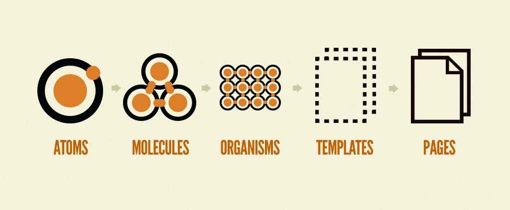
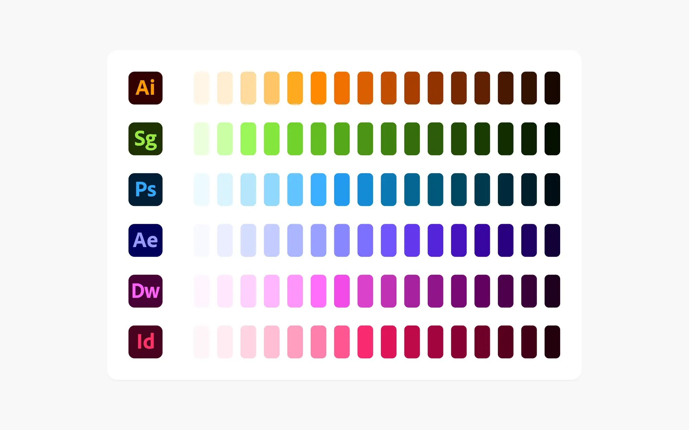
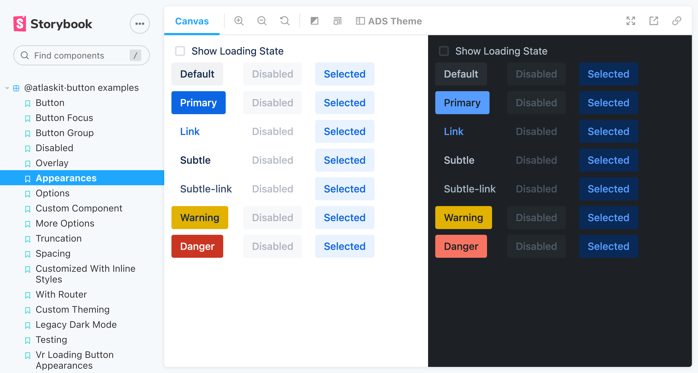
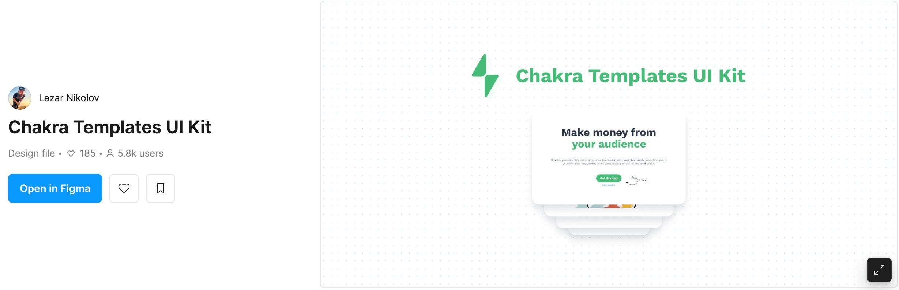

During my development work, I have repeatedly come across the following pattern.
- The designer produces a design in Figma, and will attach screen shots of the design to a Jira ticket.
- The developer will implement said design.
- The designer will play around with the design implementation and conclude it doesn’t really behave exactly as s/he had expected.
- Rinse and repeat.
The consequence of this is delivering a user story takes longer than expected, or in the words of John Carmack “after the first 90% comes the second 90%“.
There are several reasons for this:
- Figma uses absolute positioning, HTML usually doesn’t, so layout flows (yes, there is Figma auto layout, which can be of help, but it’s a newer feature, and not all designers use it).
- HTML can be quite quirky, when it comes to collapsing margins, floating objects, etc.
- Designers typically build their UIs out of primitives, whereas developers built them out of components (using component libraries), and there might not be a one-to-one relationship.
- The application just doesn’t behave as the designer expected when it comes to responsiveness / resizing of the window.
- The designer’s insistence that the implementation is pixel perfect, which of course depends on browser rendering.
Here’s an analogy I like to use.
The Architect / Structural Engineer Dichotomy
Architects and structural engineers are both crucial figures in the design and construction of buildings, but their roles and approaches differ significantly.
Architects are the creatives who conceptualize and design the overall form, function, and aesthetics of buildings. They consider factors like design, functionality, sustainability, and user experience to create spaces that are both aesthetically pleasing and functionally effective. Architects possess a deep understanding of architectural history, design principles, and building codes. They translate client requirements into detailed drawings and specifications that guide the construction process. Structural engineers specialize in the analysis and design of a building’s structural system, ensuring that it can safely and efficiently support the intended loads. They employ mathematical principles and sophisticated software to calculate the structural integrity of various components, such as beams, columns, and foundations. They work closely with architects to ensure that the structural design aligns with the architectural vision.
In essence, architects focus on the “what” and “how” of a building’s design, while structural engineers focus on the “can” and “why.” Architects envision the building’s overall form and functionality, while structural engineers ensure that the building can safely support the intended loads and withstand external forces.
Architects are creatives, and the structural engineers are more technical—they are supposed to keep them in check (anybody can see how a building like the one in the picture would require the input of a structural engineer, because it isn’t typical to build on terrain like this).
I think, in many ways the relationship between designers and developers is like the relationship between the architect and the structural engineer. Or it should be.
In my view, there needs to be a two-way collaboration between the developer and the designer during the implementation process, but this means that not only are we as developers trying to match the design, but the design must adhere to technical constraints. And we must communicate if it doesn’t.
Specifically:
- Developers will usually use a framework like React, Vue, or Angular, which are based around components and HTML / CSS (which have their own constraints).
- On top of that, developers will most likely use a component library, like ChakraUI, MUI etc., which have associated behavior which might not be familiar to the designer.
And my experience is that designers don’t usually think and design in components, hence the design / development impedance mismatch.
This is a bit like trying to apply Typescript to vanilla JS code. If the code is relatively clean, and object usage patterns are consistent, interfaces can be extracted for object types (e.g. Customer). If the code makes use of a lot of object spreads, and basically everything is a dictionary, you can’t easily do that.
One thing that we can do to mitigate it, is to use a Component-Driven Design approach.
Atomic Design Is Canonical CDD
A good introduction to CDD is Brad Frost’s Atomic Design.
With Atomic Design, you have the following:
- Your atoms will usually be your HTML primitive elements like inputs, divs, etc.
- Your molecules would be compound components, for example, form items.
- An organism would be an entire form.
- Templates would be repeating patterns that you can use throughout the app, and pages are obviously entire pages in the app.
Again, you don’t necessarily have to stick to this terminology, the only rule is you need to build your UI out of components, not HTML primitives (but this has to come from the designer). Designers WILL usually come up with some kind of atmoic design system where they define colors, margins, text-sizing. These are called design symbols.
Here’s an example of color options from Adobe’s Spectrum 2 design system.
They will do the same thing with font sizing, padding etc., where you have different presets such as font-size-200, and in this sense, the design is atomic. But a design system contains more than colors and font sizes, it contains various guidelines for form controls, info panels, patterns for displaying error messages or progress indicators, (i.e. the molecules) etc.
Storybook / Figma Components / Dev Mode
Storybook is an interesting tool, because it allows for development in isolation and testing them (by passing in props). It’s also a good way to showcase your design system.
Here’s an example of Atlassian design system, in Storybook.
Figma has support for components, but I found that most designers don’t really use them, or use them sparringly. They might use them for things such as buttons or inputs, but that’s about it (so just for the atoms). In the real world, we would have a lot of molecules (in atomic design parlance), but designers would usually copy paste in the design. And copy-pasted design is a lot like copy-pasted code, it violates DRY, and it isn’t easy to maintain. The components in Figma ideally will mirror the components in the code.
With CDD, the design flow would be something like this:
- The designer sketches a page.
- Looks at repeating patterns, and “refacts” the design by extracting components.
- Goes into DevMode and marks the design as “ready for development”.
There are a bunch of plugins that help with colaboration:
- There is a Storybook plugin for Figma, where designers can compare the actual implementation with their design.
- Also, there is a Figma plugin for VS Code, so that the developer can see what has been marked as “ready for development” in DevMode.
- Slack integrations, which notify the dev team that designs have been changed.
3rd Party Component Libraries And Custom Components
What happens if the developers use some kind of 3rd party library? Well, the good news is there are Figma libraries that replicate the existing controls in various component libraries, like MUI or ChakraUI.
If we use a library that doesn’t have a corresponding library, the designer will probably have to implement the Figma side using Figma components (or just do some sort of simplified sketch). Either way, constant communication between devs and designers is crucial.